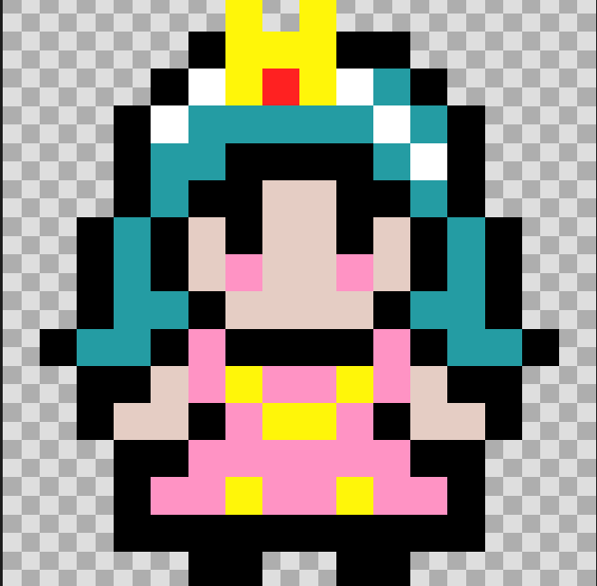

| Printzesa |  |
Pertsonai nagusia da, egin behar duena da ahalik eta txanpon gehien hartu eta sugeari eta mamuari disparatu berarengana joaten bada. |
| Sugea | |
Sugeak egiten duena da printzesari jarraitu eta hau hiltzen saiatzea. Aldi bakarrarekin disparatuta hil egiten da. Jolasan 6 suge daude. Suge bat egongo da bizitza bat baino gehiago eukiko duena. |
| Mamua | |
Mamuak egiten duena da printzesari jarraitu eta hau hiltzen saiatzea. Aldi bakarrarekin disparatuta hil egiten da.Jolasan 6 mamu egongo dira, hoietako bat bizitza bat baino gehiago eukiko du. |